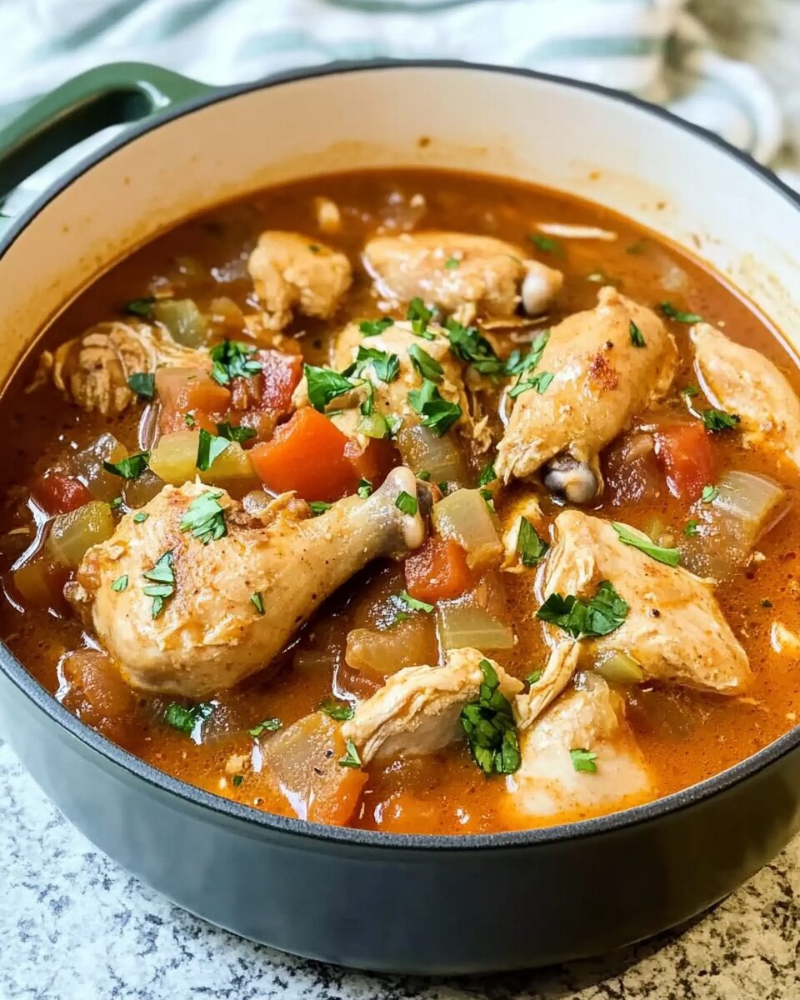

Aves · Frango
Frango estufado com tomates

Ingredientes
- 1 colher (sopa) de óleo
- 1 cebola picada
- 1 dente de alho
- 3 tiras de bacon
- 1 pimentão verde
- 2 coxas e 2 sobrecoxas de frango sem pele
- 1 lata de tomates sem pele ou 6 tomates sem pele e sem sementes
- 2 colheres (sopa) de purê de tomate
- 1 colher (sopa) de páprica
- 1 pitada de açúcar
- Sal e pimenta-do-reino a gosto
- ⅓ xícara de azeitonas pretas
- 4 colheres (sopa) de salsa picada
Modo de preparo
- Em panela grande, coloque o óleo, cebola, alho amassado, bacon e pimentão picado. Leve ao fogo para fritar o bacon e refogar os legumes.
- Junte os pedaços de frango, tomates picados, purê de tomate, páprica, açúcar, sal e pimenta-do-reino a gosto. Tampe a panela e deixe o frango cozinhar.
- Acrescente as azeitonas e 2 colheres de salsa; cozinhe um pouco mais com a panela destampada. Deixe esfriar e congele.
Observação
Livro «A arte de congelar».